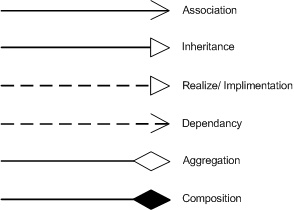
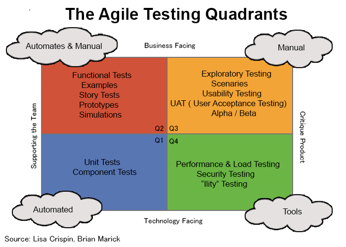

Overview
These are notes for certain chapters in Dr. Dianxiang Xu's book Modern Software Engineering: Principles & Practices.
I'm writing this a few days before the final exam as one part of my prep strategy. Since I'm only re-reading relevant chapters, there will be pretty heavy omissions and missing sections. It'd be nice to pad this out as a resource for future students, but I'll have to return the book less than a week from the time of writing. If you happen to come across this and want to contribute your own notes, feel free to fork the repo or open a PR!
-Reece
Technical Details
These notes use the stellar static site generator mdBook.
Final Exam Roadmap
Main Points
-
Basic Design Principles
-
Concepts
- Modularity
- Cohesion
- Coupling
- Encapsulation
- Information hiding
-
Precondition & Postcondition
- Options for Precondition Design: Validated and Assumed Precondition
-
Design By Contract: Pre/Postcondition as a Contract
- Assumed Precondition (Non-Redundancy) Principle
- Pre/Postcondition Violation Rules
- Reasonable Precondition Principle
- Precondition Availability Rule
- Understanding Pre/Postcondition Assertions
-
Change of Contract (Pre/Postcondition)
- Rule of Contract Change, Stronger/weaker conditions
-
Concepts
-
Object-oriented design
- Class Diagrams
- ADTs vs classes
-
Inheritance
- Overriding, Polymorphism/Dynamic Binding
- Module View vs Type View
- Method Overriding: Pre/Postconditions
- Design By Contract vs Subcontracting
- Method Overriding: Co-variance and contra-variance
-
Design Heuristics
- Cohesive Abstraction
- Encapsulation and Information Hiding
- Accessors and Mutators
- Classes as Data Types
- Inheritance
- Abstract properties
-
Agile Design Principles
- Single Responsibility Principle
- Open-Closed Principle
-
Refactoring
- What Is Refactoring?
- Why Refactoring
- Code smells
- Refactoring methods
- Refactoring vs design principles
-
Quality Assurance
- What Is Quality Assurance
- Static Code Analysis
-
Testing:
- What is software testing
- Agile Testing Quadrants
- Black-Box, White-Box, Gray-Box
- Testing Stages in Waterfall
-
Code Coverage
- Statement Coverage
- Decision coverage
- Branch coverage
- Decision vs condition
- Condition coverage
- Condition/decision coverage
- Modified condition/decision coverage
- Multi-condition coverage
- Subsumption Relationship
- Coverage tool: EclEmma
Optional
- Quiz 3-7 questions with explanations
- List of relevant midterm questions
Chapter 4 - Fundamentals of Software Design
- Software Design: the creative process of transforming a problem described by the requirements specification into a software solution
- High-Level Design
- software architecture
- overall structure
- relations among components
- properties of components/relations
- Low-Level Design
- logical, detailed design of individual components
- High-Level Design
- Software design is a heuristic, sloppy process
- a good solution may only be subtly different from a poor one
- In agile development, software design is seldom a separate phase as in the waterfall model
- intertwined with other activities
- developers make many design decisions while coding
Basic Design Principles
- Modularity: software design should be modularized.
- Cohesion: software modules should aim for high cohesion.
- Coupling: software modules should aim for loose coupling.
- Encapsulation: software modules should encapsulate data and related operations.
- Information Hiding: software modules should hide implementation details from their clients.
- Separation of Concerns: software modules should separate different concerns into distinct modules such that each module addresses one concern.
Modularity
Modularity
The degree to which the components of a system are separated.
A modular design divides complex software into uniquely named components (modules), which supports the "divide and conquer" approach for solving a complex problem by breaking it into manageable modules.
Main mechanism for software modularization:
- methods/functions
- classes
- interfaces
- packages
Drawbacks to non-modularized code:
- inflexible to changes in requirements
- code snippets aren't reusable
- code isn't unit-testable
Primary concerns of modular design:
- decomposability
- the extent to which the problem can be broken into sub-problems with simple relations
- composability
- the extent to which the modular solutions to the sub-problems can be assembled as a solution to the whole problem
- adaptability
- reusability
- discontinuity
- deletion of a module should not affect other modules
- continuity
- a requirements change affects as few modules as possible
In general, a modular design should comply with the Open-Closed Principle. It should make modules testable and confine runtime exceptions and errors to very few modules from a QA perspective.
Modularity provides the foundation for each of the principles that follow.
Cohesion
Software modules are containers of elements
- a method is a container of statements
- a class is a container of
- instance variables
- class variables
- constructors
- methods
Cohesion
The degree to which the elements contained in a module belong together.
A module with high cohesion means that the module's elements have a high degree of connectedness.
Ideally, a cohesive method does one function or action. All statements in the method body work together to achieve the method's higher-level functionality.
A good code smell for low cohesion is the method name: if the statements in a method are not connected, it can be hard to find a concise name for the method.
- the
doStuff()method
Cohesion focuses on the class interface, meaning the public constructors and methods.
- A cohesive class's public interface should justify is as an abstract data type.
- The public constructors/methods belong together and represent the essential properties of an object.
For example, a Stack<E> is defined by its last-in-first-out (LIFO) property. Thus, a cohesive design of stack might look like the following:
class Stack<E> {
public Stack();
public E push(E element);
public E pop();
public E peek();
public boolean empty();
public int search(E element);
}
Cohesion measurement must also consider inherited elements. This relates to the Stack<E> extends Vector<E> issue we keep coming back to. Since the Stack inherits methods from Vector that are not consistent with the defining property of a Stack (LIFO), the Stack class is not cohesive.
In general, a module with low cohesion is difficult to understand, test, maintain, and reuse.
A cohesive module is:
- more reusable for requirements change
- more testable for quality assurance
Note: perfect cohesion is not the goal of software design! Modules with a single atomic element are cohesive, but either hardly useful or tightly coupled to other modules. This means that cohesion should be balanced with module complexity and coupling.
Coupling
Coupling
The degree of interdependence between modules or the strength of the relationships between modules.
Good software design aims for loose coupling. The problem with tight coupling is that a module needs to be updated whenever one of its coupled modules has changed. The extent of change is relevant to the degree of dependency on the coupled module.
Tight coupling requires more effort to change, assemble, and test modules.
- testing a method requires all dependencies to be available
- when a failure occurs, tight coupling makes it difficult to locate the source of the fault
Measuring Coupling
- Size
- measured by the number of connections between modules
- a module with
foo(a, b, c, d, e, f)is more tightly coupled than withbar(a) - consider classes
Foowith 4 public methods andBarwith 100 public methods- a module would be more loosely coupled with
Foothan withBar
- a module would be more loosely coupled with
- Visibility
- measured by the prominence of the connections between modules
- positive: passing data in a parameter list
- negative: modifying global data ("sneaky connection")
- measured by the prominence of the connections between modules
- Flexibility
- measured regarding how easily the connections between modules can be changed
- consider
Stack<E> extends Vector<E> - too late to change because it would break many existing programs that use
Stackwith methods inherited fromVector
- consider
- measured regarding how easily the connections between modules can be changed
Loose coupling is often associated with high cohesion.
The goal is to minimize the number of modules affected by requirements change if feasible and reasonable, because it will make the modules mor reusable and testable.
Basic Example
Note: there's a whole section on refactoring to reduce coupling right here.
Consider the following code:
public class Client {
public void bar(D d) {
E e = d.getE();
e.doTheThing();
}
}
Here, bar(d) is coupled to both D and E. Through D, it "talks" to E. To reduce coupling, we can refactor D to handle the interaction with E itself so that bar(d) only needs to talk with D.
public class Client {
public void bar(D d) {
d.doTheThingOnE();
}
}
This follows the guideline known as the Law of Demeter.
Law of Demeter
Only talk to immediate friends.
Each unit should have only limited knowledge about other units: only units "closely" related to the current unit.
The Law of Demeter says that "a given object should assume as little as possible about the structure or properties of anything else (including its subcomponents), in accordance with the principle of information hiding."
Remote Control Example
Consider the following example:
public class RemoteControl {
private SamsungTV tv;
public void turnOn() {
tv.on();
}
}
public class SamsungTV {
public void on();
public void off();
public void tuneChannel(int channel);
}
Here, RemoteControl is tightly coupled with (and will be affected by changes to) SamsungTV. It also has no way to interface with other TV brands.
We can reduce coupling by introducing an interface TV and making SamsungTV implement the interface.
public class RemoteControl {
private TV tv;
public void turnOn() {
tv.on();
}
}
public interface TV {
public abstract void on();
public abstract void off();
public abstract void tuneChannel(int channel);
}
public class SamsungTV implements TV {
public void on();
public void off();
public void tuneCHannel(int channel);
}
With that refactoring, we've decoupled RemoteControl from SamsungTV. This gives us the freedom to implement new classes such as PhilipsTV without tightening the coupling of RemoteControl.
Encapsulation
Encapsulation provides a way to better modularization by coping with the areas of requirements likely to change. Encapsulating these areas facilitates conceptualizing the underlying problem at a higher level of abstraction so that clients only need to worry about the interface rather than implementation details.
For our purposes, we can think of encapsulation as a tool used to help achieve information hiding.
Encapsulation
- the action of enclosing something as if in a capsule
- the succinct expression or depiction of the essential features of something
In general, the operations associated with a data structure should be entirely confined to one module.
- for Tic Tac Toe, classes
MoveandGameStatemay be more appropriately contained within theBoardclass (diagram on p. 92)
Information Hiding
Information Hiding
The act of hiding information inside a module, i.e., making it invisible to the modules clients.
Good practice is for a class to make each instance variable private, setting a public accessor (getter) and, if necessary, mutator (setter).
Public instance variables (global variables) are notoriously difficult to debug. They also tend to change over time, requiring all clients to change.
A class's testability should be considered when decisions on getters and setters are made - a test may need a getter to verify that a variable has the right value.
Encapsulation can decrease the need for public instance variables - when all relevant methods are encapsulated within the same module, they all share a common visibility and access can be more appropriately restricted to the outside world.
Separation of Concerns
Separation of Concerns
Design principle for separating a program into distinct modules such that each module addresses a separate concern, facilitating module upgrade, reuse, and independent development.
Consider how web development separates concerns:
- HTML: organization of webpage content
- CSS: definition of content presentation style
- JavaScript: how the content interacts and behaves in response to user input
Despite our best efforts at modularization, some concerns crosscut many modules.
- logging
- error handling
- data persistence
- security checks
Crosscutting concerns cannot be not well-modularized and are referred to as "tangled" because they are necessarily intermixed with code that handles other concerns. These concerns follow inherently different rules for functional decomposition.
Aspect-Oriented Programming attempts to resolve this problem. AOP shouldn't be on the final, but if it is it's covered very briefly in the book on p. 96.
Footnotes
Precondition and Postcondition
Precondition
The constraints on the method's input and the states of all related objects that must hold before the method is called.
The precondition involves:
- explicit parameters
- implicit parameters (e.g. instance variables in the same class)
- global variables
Postcondition
The constraints on the method's output and the states of all related objects that the method guarantees when it returns.
The postcondition may involve both
- what is changed
- what remains unchanged
The precondition \(P\) and the postcondition \(Q\) of a method \(M\) can be represented by the correctness formula \(\{ P \}M\{ Q \}\), also known as Hoare Triples.
\(\{ P \}M\{ Q \}\) can be read as "any execution of \(M\), starting in a program state where \(P\) holds, will terminate in a program state where \(Q\) holds."
Program state is not just limited to the method itself, but all relevant objects in the program.
The correctness formula captures semantic properties of the method, meaning it may be independent of the method's implementation details.
- Consider a
Stackobject: itspopandpeekmethods require that theStackis not empty. That the stack is implemented with aVectordoesn't matter, nor does the actual implementation ofpoporpeek. - In other words, the precondition and postcondition of a method describe what to do rather than how to do it.
Preconditions and postconditions may be specified as:
- comments in source code
- part of the API documentation
- executable assertions in source code
- goal: terminate the program on unexpected failure conditions
- NOTE:
- assertions should be used to check for conditions that should never occur to identify bugs.
assertis not a control structureassertis not an input-checking mechanism
- as opposed to exceptions, which handle expected failure conditions
Assumed Precondition vs. Validated Precondition
- Assumed Precondition (demanding)
- method assumes that the precondition is always satisfied by all clients
- clients check for precondition before calling method
- adopted in design by contract, must follow those rules
- only applies in trustworthy environment
- Validated Precondition (tolerant)
- the precondition is validated in the method body by some control structure
- if/then, etc.
- often adopted by defensive design to deal with untrusted clients/external environments
- very important for safety- and security-critical software
- the precondition is validated in the method body by some control structure
Validating a precondition either
- turns the original precondition into a tautology
- converts a partial function1 into a total function2
Validation turns the original precondition into a part of the actual postcondition with a conditional effect. An assumed precondition/corresponding postcondition of
Precondition: 0 <= row < TOTAL_ROWS and 0 <= column < TOTAL_COLUMNS
Postcondition: return value is either Cell.EMPTY, Cell.CROSS, or Cell.NOUGHT
when validated becomes
Precondition: none (tautology, always applicable)
Postcondition: return value is either Cell.EMPTY, Cell.CROSS, or Cell.NOUGHT
if 0 <= row < TOTAL_ROWS and 0 <= column < TOTAL_COLUMNS
otherwise null
When a method declares a precondition, it usually assumes that the client is responsible for validating the precondition.
In Test-Driven Development, the precondition and postcondition change over time as the development process evolves. The pre/postconditions at a specific time only reflect the assumptions behind that current iteration of code.
Pre/Postcondition Specifications
Pre/postconditions need to be specified rigorously and precisely. This allows us to use the specification to reason about the correctness of an implementation.
Obtaining a precise, rigorous specification isn't a trivial task. Consider the following correct specification for a sorting algorithm (p. 101 contains incorrect examples as well).
Note: count(x, list) returns the number of occurrences of element x in list
Postcondition:
- p.length = q.length
- q[i] <= q[i + 1] for any i
- 0 <= i < q.length - 1 and count(p[j], p) = count(p[j], q), 0 <= j < p.length
Postcondition specifications need to consider both what should change after a method call and what should remain unchanged.
As a general rule, don't over-specify what should remain unchanged. Avoiding all-knowing oracles is an important TDD practice! Checking every detail every time can decrease test efficiency, slowing the iteration speed of TDD (tests should be efficient to be run so frequently).
Practice Exercises
Write accurate and meaningful specifications for the following:
int[] reverse(int[] list)returns the reversed order of all elements inlist.int linearSearch(int[] list, int key)returns the index of the first occurrence ofkeyinlistor-1if it is not found.bool isVowel(char letter)returnstrueifletteris a vowel.bool isLeapYear(int year)returnstrueif it is a leap year.TriangleType reportTriangleType(int a, int b, int c)returns the triangle type for the given sidesa,b, andc.TriangleTypeis an enumeration type{SCALENE, ISOSCELES, EQUILATERAL}.
Footnotes
A partial function is defined for a limited subset of all possible inputs for a given type.
A total function is defined for all possible inputs for a given type.
Design By Contract
Design by Contract views the precondition and postcondition of a method as a contract between
- the method (supplier or server)
- its callers (clients)
If a client calls the method with the precondition satisfied, then the supplier delivers a final state in which the postcondition is satisfied.
- client
- precondition is an obligation
- postcondition is a right
- supplier
- precondition is a right
- postcondition is an obligation
To correctly apply design by contract, each of the following rules must be observed or the program may behave unexpectedly:
- Assumed Precondition Rule
- Pre/Postcondition Violation Rules
- Reasonable Precondition Rule
- Precondition Availability Rule
Assumed Precondition Rule
Design by Contract adopts the demanding design of the precondition by assuming the precondition always holds.
The Assumed Precondition Rule (The Non-Redundancy Principle)
The body of a method should not test for its precondition because it is an assumed benefit for the supplier.
In other words, if a call to the method does not satisfy the precondition, the method is not bound by the postcondition.
Pre/Postcondition Violation Rules
Violation of a pre/postcondition at runtime indicates the existence of a bug.
The Precondition Violation Rule
A precondition violation is the manifestation of a bug in the client regardless of whether the postcondition is satisfied or violated.
In other words, if the client does not fulfill its contract, then the supplier is not bound by the postcondition.
// Precondition: x >= 0
// Postcondition: abs(sqrt(x) * sqrt(x) - x) < epsilon
double sqrt(double x);
When x = -1, the implementation breaks. Because the client violated the precondition, the client code is faulty.
The Postcondition Violation Rule
A postcondition violation is the manifestation of a bug in the supplier because the supplier did not fulfill its contract.
// Precondition: letter in 'a'..'z' || 'A'..'Z'
// Postcondition: return true if letter is a vowel
// false otherwise
boolean isVowel(char letter) {
String vowels = "aiouy" // 'e' is missing
char ch = Character.toLowerCase(letter);
return vowels.indexOf(ch) >= 0;
}
The call isVowel('E') incorrectly returns false. Because the client satisfied the precondition and the server violated the postcondition, the supplier code is faulty.
Reasonable Precondition Rule
In design by contract, the precondition is meant to clarify which cases the method cannot handle concerning logical requirements.
The Reasonable Precondition Rule
Requires that:
- The precondition should appear in the official documentation distributed to authors of clients.
- The need for the precondition should be justified logically in terms of the specification, not for the supplier's convenience of implementation.
public class BankAccount() {
public BankAccount();
public deposit(double amount);
}
In the class above, should deposit accept a negative amount to mean withdrawal? Obviously not, because deposit and withdraw exhibit different behaviors.
- hi, can I deposit $-100 please?
In this case, a precondition of amount > 0 would be reasonable.
Precondition Availability Rule
The precondition must not rely on private variables or methods hidden from the clients.
The Precondition Availability Rule
Every client of the method should be able to check for its precondition.
Change of Contract
Impact of Contract Change
Updating a method during development is common for any variety of reasons.
When a method's signature is changed, all clients (including unit tests) must be updated as well. This sort of change will likely result in compiler errors, which are easy (if tedious) to find and fix.
Updates become especially risky when a method's original contract is modified without changing the method's signature. This is an implicit interface change that may or may not break existing client code.
Rule of Contract Change
There are some circumstances where pre/postcondition change may not break client code (including test code).
Rule of Contract Change
A safe change to a method may replace:
- the existing precondition with an equal or weaker one
- the existing postcondition with an equal or stronger one
Given two unequal conditions \(P_1\) and \(P_2\):
- \(P_1\) is stronger than \(P_2\) if \(P_1 \implies P_2\).
For example:
- \(x > 10\) is stronger than \(x > 5\).
- \(y > 0\) is stronger than \(y \geq 0\).
Some conditions that seem different at first glance may be equivalent.
- \(x > 0 \iff 2x > 0\), so the conditions are equivalent.
even(x)\(\equiv\)!odd(x)
Two unequal conditions may also not be comparable. This circumstance may break client code.
- \(x = 1\) is not stronger or weaker than \(x = 2\).
list.length=countis not stronger or weaker thanlist.length=count-1.
Unit tests, if they exist, can be very convenient for verifying the impacts of contract change.
Contract Change is Incremental
A special case of contract change is adding new code to a method while preserving existing functionality for incremental development (such as in TDD). We have to ensure that whenever the new version is correct, the old version is also correct. If it is not, we have to modify existing code.
The opposite is not necessarily true! A correct original version doesn't guarantee that new code is correct.
Formalizing this idea: \[ (P_2 \implies Q_2) \implies (P_1 \implies Q_1) \] where \(P_1, Q_1\) are the original pre/postconditions and \(P_2, Q_2\) are the new pre/postconditions.
The above rules of equal or weaker new precondition and equal or stronger new postcondition are sufficient (but not necessary) for the above correctness argument.
Theorem: Let \(P_1 \implies P_2\) and \(Q_2 \implies Q_1\).
- Then \((P_2 \implies Q_2) \implies (P_1 \implies Q_1)\).
Proof: omitted, available on p. 111
Consider precondition validation1 from Section 4.2. Converting a precondition \(P\) into a tautology necessarily weakens it.2 However, it's not clear that the postcondition is necessarily strengthened. When reasoning about the weaker or stronger relation of postconditions, we may need to consider their corresponding preconditions.
To do so, we need to prove that \(Q_2\) is stronger than \(Q_1\). In other words, show that \(Q_2 \implies Q_1\).3
Page 111 contains more formulations of this idea.
Takeaway
Code updated with a weaker precondition and a stronger postcondition
- accepts more inputs
- produces correct results.
Footnotes
Specifically the sense of turning the original precondition into a tautology and moving it into the postcondition.
Let \(P\) be an arbitrary expression, then \(P \implies \text{true}\). Thus, \(\text{true}\) is weaker than any expression \(P\).
We're trying to prove that whenever the new postcondition (\(Q_2\)) is true, the old postcondition (\(Q_1\)) must also be true. It's a verification that a contract change (new functionality) will never break the original contract expected by a caller.
Chapter 5 - Object-Oriented Design
Object-oriented software construction is to build a set of interacting ADTs partially or fully implemented.
Inheritance and polymorphism are also essential features.
Class Diagrams (p. 114)
Static structure of an object-oriented program containing
- attributes
- constructors
- methods
- relationships among classes and objects
May be
- created as a design or analysis doc before coding
- generated from existing source code
Relationships Between Classes
Two groups:
- class-level relationships
- inheritance
- implementation
- instance-level relationships
- dependencies
- association
- aggregation
- composition
Class-Level Relationship
Inheritance is also called generalization because the subclass/type is a specialized form of the superclass/type. The implementation relationship between a class and an interface means the class implements the interface.
Instance-Level Relationship

- Dependency
- points from the client element to the server element
- changes to the server may cause changes to the client
- Association
- family of links
- bi-directional (line)
- uni-directional (directed line)
- aggregation (includes composition aggregation)
- reflexive (on the same class)
- Can include:
- role names
- ownership indicators
- multiplicity
- visibility
- etc.
- family of links
- Aggregation
- specific binary association representing a part-whole or part-of relationship
- contained class does not have a strong lifecycle dependency on container
- a teacher has students
- destroying a teacher doesn't mean destroying students
- Composition
- aka composition aggregation
- stronger form of aggregation
- considered as a "physical containment" relationship
- when container is destroyed, contents are destroyed
Multiplicity Notations
| Notation | Meaning |
|---|---|
| 0 | No instances |
| 0..1 | No instance or 1 instance |
| 1 or 1..1 | Exactly 1 instance |
| 0..* or * | Zero or more instances |
| 1..* | 1 or more instances |
ADTs as the Class Foundation (p. 117)
The notion of a class supports the basic design principles:
- Modularity
- Cohesion
- Encapsulation
- Information Hiding
Abstract Data Types (ADTs) help us:
- capture the essential meaning of a class
- develop a deep understanding of acceptable class abstractions
- why it is desirable to document a public interface in terms of:
- preconditions
- postconditions
- invariants.
Abstract Data Type
A data type for which only the properties of the data and the operations to be performed on the data are specified, without concern for how the data will be represented or how the operations will be implemented.
Usually, an object's prodperties can be captured by its behaviors (operations) rather than its data.
Example: Stack (p. 119)
- ADT in code
- why it's inadequate - what's the essential property?
- Formal ADT specification solves inadequacy
- Type name and parameters
- Function signatures
- Preconditions
- Axioms
Class Invariant
A condition that any object of the class must satisfy at certain times.
Example: In the TicTacToe example, turn must be either X or O, though its data type is char.
Class invariants are usually established during construction and constantly maintained between calls to public methods. The code within the body of a method may break an invariant as long as it is restored before the method returns.
A class invariant may capture relationships between the methods of the class. For example, peek(push(s, x)) = x and pop(push(x, s)) = s describe the functional relationships between push, pop, and peek.
Summary
- A non-abstract class is an ADT equipped with implementation details
- the class's public interface corresponds to the ADT specification
- instance variables are the data representation of the ADT
- the methods:
- implement the ADT's functions
- satisfy the preconditions and axioms
- Object-oriented software construction
- Build a collection of interacting real-world entities (ADTs)
- Create classes that are easier to implement initially and modify over time
- At the level of analysis, design, or implementation
- The choice of data representation may introduce additional constraints
- if an array is used to represent a stack, whether the stack is full becomes an issue
- An abstract class is an ADT with partial or no implementation details
- An interface is an ADT without any implementation
- An object-oriented design consists of a set of interacting ADTs, partially or fully implemented
- Without ADTs, classes are like convenient carrying cases for loosely-related collections of data and operations
Inheritance and Polymorphism (p. 121)
A subclass: - inherits all the features from its superclass - can modify certain inherited features - achieved through method overriding
Polymorphism
The quality or state of existing in or assuming different forms. For this chapter: an object or reference may take multiple forms in different instances.
At run time, objects of a derived class may be treated as objects of a base class in places such as method parameters and collections or arrays. When this polymorphism occurs, the object's declared type is no longer identical to its run-time type.1
Dynamic Binding:
The process of linking a procedure call to a specific sequence of code (typically a class method) at runtime.
In static binding, the compiler determines fixed types for all variables and expression. In contrast, dynamic binding allows a method to be looked up by name at runtime.
In other words, dynamic binding allows the compiler to overlook the type discrepancy, making the assumption that an appropriate method will be found at runtime. Because instances of a Child class inherit their Parent class's methods, a runtime search for some Parent method can also be fulfilled by a Child's version of that method.
This is why any Child class can stand in for their Parent class in a method signature.
- Figure 5.4 in book has a visual representation!
Meanings of Inheritance: Module vs. Type View
Module View
A subclass describes an extension of its superclass from the perspective of reusing the superclass's code.
- Problems can arise when a designer
- uses the module view without a meaningful is-a relationship
- does not observe the polymorphism and dynamic binding semantics
Example: Stack<E> as a subclass of Vector<E> (p. 123)
Stack<E>inherits methods fromVector<E>that violate the Stack's LIFO principleadd(0, element)adds to bottom of stack- `remove(0) removes bottom of stack
- A better design would replace inheritance with composition (p. 123)
Type View
A subclass describes a subtype of the superclass type.
- based on "is-a" relation - see definition for "subtype" below
- For example,
intmight be a subtype oflongordouble. - The set of objects of a superclass subsumes the set of objects of a subclass.
- More aligned with the semantics of polymorphism than module view
- Generally preferred to module view
- Consistent with ADTs as the class foundation
- A subclass's ADT is a subtype of its superclass's ADT
Example: Square vs. Rectangle (p. 123, 125)
Square as a subclass of Rectangle
- in math, a square is a special type of rectangle
- if
Squareinherits fromRectangle, it must overrideRectangle'ssetWidth()andsetHeight()methods. - since the classes behave so differently, the is-a relationship isn't ideal.
- there should be no inheritance relation
Subtype
Data type \(t_2\) is a subtype of data type \(t_1\) if every value of \(t_2\) can be assigned to a variable of \(t_1\).
Consider inheritance's relationship with the Open-Closed Principle:
- a subclass may revise an inherited method through overriding while adding new methods.
- open for extension through inheritance
- closed for modification through overriding
Subcontracting
A subclass is a subcontractor of its parent class, meaning it must satisfy at least the same contract. If you subcontract, you must be willing to do the job under the original conditions, no less.
Subcontracting
Design by contract in the context of inheritance with overriding and dynamic binding.
Pre/Postcondition of Method Overriding
Consider a server \(A\) with a descendent \(A_1\). As a result of dynamic binding, a call from client \(C\) may be served by either \(A\) or \(A_1\) at runtime. This means that, to uphold an ancestor class's contract, the descendent must enforce either an equal or weaker precondition or an equal but stronger postcondition.
Subcontracting Rule of Inheritance
An overriding method that has either
- an equal or weaker precondition
- an equal or stronger postcondition
causes no harm to a client call that relies on the original.
So in essence, subcontracting is just a strategy that guarantees descendants of a server do not break a contract expected by a client.
Covariance/Contravariance for Method Overriding
class AnimalShelter {
Animal getAnimalForAdoption();
void putAnimal(Animal animal);
}
class CatShelter extends AnimalShelter {
Cat getAnimalForAdoption();
void putAnimal(Object animal);
}
getAnimalForAdoption()follows a covariant subtyping relationshipCat extends AnimalCatShelter extends AnimalShelter- considered overriding
putAnimal()follows a contravariant subtyping relationshipAnimal extends ObjectCatShelter.putAnimal()takes a more general argument than the class it extends from- considered overloading
Rules of Inheritance
Is-A Rule
Do not make
Binherit fromAunless you can somehow argue that everyBis anA.
The Change Rule of Inheritance
Do not use inheritance to describe a perceived “is-a” relation if the corresponding object components may have to be changed at run time.
Client relations usually permit change while inheritance relations do not.
- If an client of type
Bhas a component (server) of typeA, it is possible to change that component at runtime. - However, no component
Bthat inherits fromAcan change the fact of its own inheritance.
The Polymorphism Rule of Inheritance
Inheritance is appropriate to describe a perceived "is-a" relation if entities of the more general type may need to become attached to objects of the more specialized type through dynamic binding.
Premature Classification:
Inheritance shouldn't be used when a simple instance would suffice. (heirs vs. instances)
Footnotes
Design Heuristics (p. 135)
Design heuristics are general guidelines, not recipes! They only help look for good characteristics or bad signs of a class design.
Cohesive Abstraction
A class should be a cohesive module to which the methods belong together.
- Generally associated with a single abstraction (like an ADT).
- should be capturable by a noun or adjective
StackorComparable- verbs like
printorsendshould raise a red flag
- should be capturable by a noun or adjective
- Should also think if any items are missing
- High cohesion is associated with loose coupling.
Encapsulation and Information Hiding
A cohesive interface doesn't guarantee a good design.
Data structure should be bundled with associated operations
TicTacToemight contain many appropriate methods, but what if theboardis defined in another class?
Accessors and Mutators
Accessor
A query method that finds out the runtime state of an object of the class.
Mutator
A function that changes the state of an object.
Command-Query Separation Principle
When a class has both accessors and mutators, a clear separation is desirable.
- accessors should not change object states
- mutators should make a certain change
Classes as Data Types
In a typed object-oriented language, a class is a data type.
When a class only has static variables/methods, it deserves a closer look.
- this is acceptable if a class is meant to only have one instance (Singleton)
Inheritance
- in a good inheritance relationship, the superclass's methods should be cohesive with those in the subclass.
Stack<E>andVector<E>do not have cohesive methods.
- will a future change of the superclass affect a subclass?
- avoid introducing new assumptions that could be broken by a potential superclass change
- overriding may modify the precondition and postcondition of an overridden method and affect current/future clients of the class
Abstract Properties
Can often be stated in terms of:
- preconditions
- postconditions
- class invariants
If not, the class's intent may be unclear.
Class invariants capture how the constructors and methods (especially mutators and accessors) are related.
- An accessor's postcondition should reflect no object state change
- A mutator's postcondition should specify a specific object state change
The SOLID Principles (p. 141)
SOLID is a mnemonic acronym for five agile design principles that are intended to make software design more understandable and adaptable to requirements change. The SOLID principles are a subset of many principles promoted by Uncle Bob.
Note: only the SRP and OCP were covered in class.
Single Responsibility Principle
Single Responsibility Principle
A class should have one and only one reason to be changed.
- who is the code responsible to?
- who must the design of the code respond to?
This does not apply to bug fixes and refactoring - those are the responsibility of the programmer, not the code.
The SRP is closely related to cohesion and coupling.
- Cohesion is the degree to which the elements contained in a module belong together, mostly from the functional perspective.
- The elements in a cohesive module should change for the same reason.
- with 2+ responsibilities in one module, changes to one may impair or inhibit the others
- well-aligned with separation of concerns (4.1.6)
public class RetirementAccount() {
public void compileReport();
public void printReport();
}
This class could be changed for
- the content of the report
- the format of the report (HTML, XML, etc)
These are separate responsibilities, so should be in separate classes.
Open-Closed Principle
Open-Closed Principle
Software modules should be open for extension, but closed for modification.
A subclass may
- extend a superclass through inheritance (open for extension)
- override an inherited method without the need to change or recompile the superclass (closed for modification)
Polymorphic Open-Closed Principle
Extension should not result in changes to the source or binary code of the existing superclass or clients of the superclass.
Example: Closed Shape vs. Open Shape (p. 143):
General idea:
- several classes (
Line,Circle, etc.) extendShape. - Some shapes have a
calculateArea()method, others don't. - class
Diagramhas anArrayList<Shape>with the following loop:
for (Shape shape : shapes) {
if (shape instanceOf Circle)
totalArea += (Circle) shape.calculateArea();
else if (shape instanceOf Square)
totalArea += (Square) shape.calculateArea();
}
What if we need to add a new shape?
- doesn't affect
Shape - does affect
Diagram, a client ofShape- this violates the OCP
Problem: inadequate classification of Shape objects
- some have area, others don't
Possible solutions:
- Create separate
ClosedShapeabstract class withcalculateArea()method - Give
LinecalculateArea() method, return 0
When creating a class design that complies with the OCP, it's vital to anticipate likely changes. It allows us to invent an abstraction to protect the change from affecting the existing classes.
Chapter 7 - Refactoring for Design Improvement
Refactoring
(noun) A change made to the internal structure of software to make it easier to understand and cheaper to modify without changing its observable behavior.
(verb) To restructure software by applying a series of refactorings without changing its observable behavior.
Observable behavior has different definitions in different contexts. In the context of refactoring, it depends on who is doing the observing, which is usually related to code ownership.
It's generally safe to refactor if the refactoring only introduces a new public interface. Changing a public interface can be done safely if the programmer doing the refactoring also controls all calling code. If the interface has been published for external use, the old interface may need to be deprecated if the refactoring is highly desirable.
An alteration to a public interface without retaining the old one is considered a revision as opposed to a refactoring.
Refactoring is not:
- adding or modifying functionality
- fixing bugs
- tuning performance
Automated tests help make refactoring safe and efficient.
Why Refactor?
- Improve the design of software
- Design decays by default, you have to work against it.1
- Make software easier to understand
- When you're just trying to get the program to work, you're probably not thinking about the future developer (you) who will have to maintain it.
- Help find bugs
- Part of refactoring is building a deep understanding of the relevant code. Building this understanding can help make intended behavior more clear.
- Help program faster
- Poor design causes bottlenecks, refactoring helps clear out bad design.
Footnotes
Code Smells
How do you know when you should begin refactoring?
Code Smell
A "sniffable" characteristic in source code that possibly indicates a deeper problem.
Code smells are not bugs, only indicators that some piece of code may deserve a closer look. Code smells follow a few categories1:
- Bloaters
- classes or methods that are too big or complex
- large class
- long method
- long parameter list
- classes or methods that are too big or complex
- Non-object-orientation
- incomplete or incorrect application of OO principles
- switch statements
- methods are all static
- incomplete or incorrect application of OO principles
- Change preventers
- a change made in one place entails many changes in other places
- shotgun surgery
- a single change must be made to multiple classes simultaneously
- divergent change
- many changes are needed to a single class
- shotgun surgery
- a change made in one place entails many changes in other places
- Dispensables
- unneeded or pointless code
- dead code
- duplicate code
- data class
- unneeded or pointless code
- Couplers
- excessive coupling between modules
- inappropriate intimacy
- middleman
- class that only performs one action and delegates work to other classes
- message chains
v.a().b().c().d()
- excessive coupling between modules
Footnotes
Named Refactorings
The noun definition of refactoring corresponds to the named refactorings. Examples include:
- "Move Method"
- "Rename Method"
- "Extract Interface"
Martin Fowler's classification of refactorings consists of six categories:
- composing methods
- moving features between objects
- organizing data
- simplifying conditional expressions
- making method calls simpler
- dealing with generalization
Page 193 (Table 7.2) has a huge list of specific examples!
Refactorings for Duplicate Code
"Extract Method" - any differences can be accounted for by a parameter.
Multiple similar or identical methods may be merged into one with parameters to capture any differences.
Inverses of Refactorings
| Method | Inverse |
|---|---|
| Replace Value with Reference | Change Reference to Value |
| Add Parameter | Remove Parameter |
| Pull Up Method | Pull Down Method |
| Extract Subclass | Collapse Hierarchy |
| Extract Class | Inline Class |
| Remove Middle Man | Hide Delegate |
| Replace Inheritance with Delegation | Replace Delegation with Inheritance |
Refactorings and Design Principles
Refactoring is widely recognized as a design activity or a step in the design process. This is because code smells indicate a violation of one or more design principles. There are thus refactorings for cleaning up specific code smells.
Page 197 has a table full of design principles and associated named refactorings for reference.
Refactoring for Modularity
Large classes, long methods, and various forms of duplicate code are the code smells that often indicate inadequate modularity or abstraction.
Some refactorings for dealing with such smells might be:
- extract method
- extract class
- extract superclass
- extract subclass
- extract interface
In the tic tac toe example, this might take the form of extracting a new makeMove() function from the onMouseClick() function.
Separation of GUI and business logic is another example of this pattern.
Refactoring for High Cohesion
If a method contains several blocks of code that are not well-connected, we may extract new methods from the individual blocks.
If a class is not cohesive because a method is missing but appears in another class, we may move the method to the class to which it belongs.
- In the tic tac toe example from the previous section, this took the form of moving the
makeMovemethod from theGUIclass to the business logic class (Board).
Similarly, if a if a method isn't connected with any other methods in the same class, it should likely be moved out to where it belongs.
Modularity and cohesion are closely related, so share many named refactorings.
Book example: does a PiggyBank class need to know about Nickels or Dimes, or would it be better to abstract that information into a Coin class?
Refactoring for Loose Coupling
Consider a client-server model that looks like the following:
class Client {
private Server server;
}
In this example, Client interacts directly with Server In other words, they are tightly coupled. It may be better to extract an abstract interface from Server that Client can interact with.
Recall this example from Chapter 4:
public class Client {
public void bar(D d) {
E e = d.getE();
e.doTheThing();
}
}
bar(d) is tightly coupled to both D and E.
D must produce E, but e.doIt() is still fully contained within bar(d). Recall that this violates the Law of Demeter.
To reduce this coupling, we might remove the intermediate D object as follows:
public class Client {
public void bar(E e) {
e.doTheThing();
}
}
We may also hide the delegate1 by giving D a method that calls the function from E itself. This means foo is no longer talking to E (the "friend of a friend"), only D.
public class Client {
public void bar(D d) {
d.doTheThingOnE();
}
}
Notice that this creates a middleman structure, which is itself a code smell. That doesn't mean a middleman structure is always a bad idea! A middleman may be used to avoid interclass dependencies or created on purpose (Proxy, Decorator patterns).
Footnotes
"Hide Delegate" is the inverse of "Remove Middle Man". More information on the "Hide Delegate" refactoring.
Refactoring for Encapsulation/Information Hiding
Main refactorings:
- Move Field
- Move Method
- Hide Method
- Encapsulate Downcast
- Encapsulate Field
- Encapsulate Collection
- Hide Delegate
- Self-Encapsulate Field
Book example: CardManager class has method updateLimit() which has direct access to an instance variable in Card class. Hiding the instance variable and providing setters and getters within Card would be a valuable refactoring.
Refactoring for Inheritance/Polymorphism
Refer back to the closed shape vs. open shape example.
Code examples and chapter-specific context are available on page 208.
Refactoring to Design Patterns
Since we didn't cover design patterns, I don't think this will be on the final.
Page 211 is the reference in case it is.
Chapter 9 - Software Quality Assurance
Software Quality Assurance
A set of activities that monitor and assess the software development methods and processes in a project to ensure proper quality of the software.
Software quality assurance involves both product and process assurance.
All software development projects should have a quality assurance plan that defines the activities and tasks to ensure that the software satisfies the established requirements and customer needs within the budget and schedule constraints.
Verification and Validation (p. 272)
Validation
Aims to ensure that the software meets the needs of customers and other stakeholders.
Are we building the right thing?
- Sample validation methods:
- requirements reviews
- prototyping
- validation of analysis models
- acceptance testing
Verification
Aims to ensure that the software complies with the existing requirements, specifications, or regulations.
Are we building it correctly?
-
Sample verification methods:
- reviews
- walkthroughs
- inspections
- testing
- static code analysis
- theorem proving
- model checking
-
Validation often involves acceptance and suitability with external customers while verification is an internal process.
-
Software testing may address both verification and validation issues
- validation
- checks the observed results of test cases against the customer's needs
- acceptance testing
- checks the observed results of test cases against the customer's needs
- verification
- checks the observed results against
- a specification (postcondition of a method)
- the desirable and undesirable behavior from implicit requirements or expectations
- checks the observed results against
- validation
Software Testing
Software Testing
Testing is the process of executing a program with the intent of finding errors.
Assume that the program contains errors and then test the program to find as many errors as possible.
What makes a good test case?
- A good test is one that has a high probability of detecting an as-yet undiscovered error.
- A successful test is one that detects an error.
Testing vs. Development Processes
Testing Stages in Waterfall
In non-agile processes, testing of given production code is to execute the code with test cases to validate the requirements and find errors. This is usually led by a quality assurance group.
- Executes given production code with test cases to validate requirements and find errors
- Often performed by an independent testing team
Sample Process:
- specify test requirements
- create a test plan to meet constraints
- computing resources, time, budget
- design test cases to cover requirements
- implement tests
- manually perform or write/run test code
- analyze test results and create reports
The testing process in Waterfall is often destructive because it attempts to break the software.
- not in Agile/TDD: see below!
Agile Processes
In Agile processes, testing is as integral to software development as coding.
Following agile principles, agile testing
- ensures delivering the business value desired by the customer at frequent intervals
- involves all members of a cross-functional team
In TDD, test cases are transformed into test code before the production code is written.
Compared to traditional testing, this process is constructive in that it builds up software.
Test Cases
A test case is composed of
- a context
- the condition or configuration under which the test can be executed
- one or more test inputs
- action or procedure with input data, such as a method call or a UI interaction
- corresponding test oracles
- a test oracle consists of
- expected result (oracle value) of input
- comparison of the expected result with the actual result
- a test oracle consists of
Positive, Negative, and Malicious Tests
- Positive Test
- deals with only valid inputs
- Negative Test
- deals with only invalid inputs
- Malicious Test
- special type of negative test that attempts to break the software
- e.g. SQL injection tests
To adequately test a program, negative tests usually outnumber positive tests. A ratio of 3:1 is not uncommon.
Test Suites
A test suite is a set of test cases and/or test suites.
It's generally impossible to create a complete test suite that can exhaustively test a real-world program due to its large input space and possible execution paths. The design of a test suite often aims to select representative tests with a certain strategy.
Pass and Fail
A failing test indicates that either:
- the software under test is faulty
- the test case itself is faulty
A passing test doesn't guarantee correct software!
The Test Oracle Problem
The test oracle needs to address several questions:
- What is the source for the expected result?
- is the source trusted and correct?
- a correct specification isn't always available
- Is it possible to define the expected result precisely?
- is there a precision requirement?
- there are different kinds of input with different possible precision
- What is the format and media of the expected result?
- is it displayed? printed? streamed into a file? database? network?
- What should remain unchanged by the test input?
- Is it feasible to directly or indirectly compare the actual result with the expected result?
Specified Test Oracles
Created from a trusted (partial) specification or abstract model.
- trusted specification: precondition/postcondition
- abstract model: finite state machine
Sometimes implemented as built-in assertions in the source code. A failure occurs when an assertion evaluates to false.
Implicit Test Oracles
Distinguishes between a system's correct and incorrect behavior through general implicit knowledge rather than domain knowledge or specification.
Implicit test oracles target faults by demonstrating runtime anomalies such as exceptions, abnormal termination, and crashes. This applies to almost all programs.
Derived Test Oracles
Distinguishes correct behavior based on information derived from properties of the software under test, other increments, or implementations of it.
Regression testing can exploit relations that should hold across multiple versions of the software.
Testing Strategies
Black-Box Testing
- tests with no knowledge of internal workings
- typically tests features according to specification
- sample techniques (detail on p. 276):
- equivalence partitioning
- boundary value analysis
- testing with pre/postconditions
- model-based testing
White-Box Testing
- uses knowledge about the code
- sample techniques (detail on p. 277):
- code coverage-based testing
- path testing
- mutation testing
- dynamic symbolic execution
Black-Box vs. White-Box Testing
Fuzzing
- black-box when generating test inputs from specification
- white-box when generating test inputs from source code
Neither strategy is superior, each has advantages and disadvantages.
Gray-Box Testing
- Example 1
- design tests according to the code of multiple modules (white box)
- conduct tests through the exposed interfaces (black box)
- Example 2
- create and run tests according to pre/postcondition of a module (black box)
- measure the code coverage (white box)
- if code coverage doesn't meet goal, we can generate more tests from the code to exercise the uncovered statements or paths (white box)
The Agile Testing Quadrants
Introduced by B. Marick, popularized by L. Crispin and J. Gregory.

The diagram is slightly different from the book's (p. 282). The book notes that some diagrams may be different because of various context/interpretation discrepancies, or because some terms just have no well-accepted definitions.
A particular testing form may belong to more than one quadrant. For example, regression testing might fit into all quadrants.
Static Code Analysis
Static Code Analysis
The analysis of source or binary code without actually executing the code. Analogous to automated code review.
Where compilers find syntax errors, SCA tools find software defects. They do not execute given code.
An SCA tool may build upon compiler or reverse engineering techniques for lexical and syntax analysis. It examines the parsed code from the perspectives of control flows or data flows and identifies potential problems according to specific features about what is good or bad.
Control Flow Analysis
Uses control flow graphs or call graphs to reason about the order of statements or instructions and the possible execution paths.
Data Flow Analysis
Examines how the variables (data) are computed and used across the basic code blocks, usually based on the CFGs.
In recent years, machine learning algorithms have been applied to SCA.
Here, the book covers the tools FindBugs and PMD. These are not listed on the final review sheet but appear on page 284-288 and in the Chapter 9 PowerPoint. There probably also won't be any questions about SCA via machine learning, but that info is on pages 289-290.
Chapter 10 - Fundamental Testing Techniques
Fault detection condition is a fundamental concept for reasoning about testing effectiveness.
It consists of the constraints that must be satisfied by test cases to reveal a specific fault.
Fault Detection Condition
Consider the following function:
boolean pass(int a, int b) {
if (a >= 0 && b >= 0) {
int mean = (a - b) / 2; // should be (a + b) / 2
return mean >= 40;
} else {
return false;
}
}
The table below demonstrates three test cases that evaluate incorrectly for different reasons.
Ineffective Test Examples
| a | b | oracle value | constraint unsatisfied |
|---|---|---|---|
| 90 | -10 | false | reachability |
| 90 | 0 | true | necessity |
| 100 | 10 | true | propagation |
These tests cannot reveal the fault because they do not satisfy the fault detection condition. A fault detection condition consists of three constraints:
Reachability Constraint
The test input must be able to reach the faulty statement such that it is executed.
In the example, test #1 exercises the else condition so mean is never created.
This error holds for any \(a, b: (a < 0) \vee (b < 0)\). So the reachability constraint is \(a \geq 0 \wedge b \geq 0\).
Test #1 gives \(b < 0\), so it does not satisfy the reachability constraint.
Necessity Constraint (State Infection)
The test input must make the faulty statement produce an incorrect intermediate result.
In the example, test #2 gives (a - b) == (a + b), so mean is calculated correctly despite the error.
This error holds for any \((a - b) = (a + b)\), or \(b = 0\), so the necessity constraint is \(b \neq 0\).
Test #2 gives \(b = 0\), so it does not satisfy the necessity constraint.
Propagation Constraint
The test input must propagate the incorrect intermediate result so that the final result is incorrect and observable.
In the example, test #3 gives mean == 45, and since 45 >= 40 both the correct and incorrect implementations return true.
There are two options here:
- \((a - b) \geq 80 \wedge (a + b) < 80\). Since \(a \geq 0 \wedge b \geq 0\), this is impossible.
- \((a - b) < 80 \wedge (a + b) \geq 80\).
So the propagation constraint is \((80 - b) < a < (80 + b)\).
Test #3 gives \(70 < 100 < 90\), which is false. So test #3 doesn't satisfy the propagation constraint.
Fault Detection Condition
These three constraints together form the complete fault detection condition: \[ a \geq 0 \text{ and }\\ b > 0 \text{ and }\\ (80 - b) < a < (80 + b) \]
A test case can only reveal the fault if it matches this condition.
Note that if the correctness of mean = (a - b) / 2 and mean = (a + b) / 2 were flipped, this error condition would still hold.
In reality, we don't know whether code under a given test is faulty. Even if it is faulty, we don't know exactly where or in what way. This is an experience game. When a test has demonstrated the presence of a fault, we know the detection condition has been met. A test misses the chance of revealing a fault only because it does not satisfy the detection condition.
Generating Test Cases
Fault detection conditions can also be used to generate test cases or prove functional equivalence. For the above example, we may generate a test, e.g., \(a = 60, b = 50\).
- When a test can be generated from the condition, it demonstrates that the two versions are functionally equivalent.
- If the condition is unsatisfiable, the two versions are functionally equivalent.
Fault Detection Condition Exercise
Consider the following faulty code snippet:
boolean foo(int x, int y) {
int z;
if (x > 0) {
z = x * y;
} else {
z = y + y; // Should be y * y
}
return z > y;
}
-
Can the following test cases reveal the fault? Why or why not?
foo(1, 1)- No, because \(x > 0\) only the correct branch is exercised.
- \(z > y\) returns the expected value.
- Not satisfied: reachability constraint
- \(x \leq 0\)
foo(0, 0)- No. The else branch is exercised, but \((y + y) = (y \cdot y)\) for \(y = 0\).
- \(z > y\) returns the expected value.
- Not satisfied: necessity constraint
- \((y + y) = (y \cdot y)\), meaning \(y \not\in \{0, 2\}\)
foo(0, 2)- No. The else branch is exercised, but \((y + y) = (y \cdot y)\) for \(y = 2\).
- \(z > y\) returns the expected value.
- Not satisfied: necessity constraint
- \(y \not\in \{0, 2\}\) as above.
foo(0, 3)- No.
- The else branch is exercised.
- \((y + y) = 6 \neq 9 = (y \cdot y)\), so the intermediate result is incorrect.
- However, because \(z = 6 > 3 = y\) the incorrect intermediate result doesn't produce an incorrect and observable final result. \(z > y\) returns the expected value.
- Reworded: both correct and incorrect versions return a correct result.
- Not satisfied: propagation constraint
- \((y + y > y) \not\equiv (y \cdot y > y)\)
- Two scenarios:
- \(y + y > y\) and \(y \cdot y \leq y\)
- \(y > 0\) and \(0 \leq y \leq 1\)
- So \(0 < y \leq 1\).
- \(y + y \leq y\) and \(y \cdot y > y\)
- \(y \leq 0\) and \((y < 0 \text{ or } y > 1)\)
- So \(y < 0\).
- \(y + y > y\) and \(y \cdot y \leq y\)
- Putting these scenarios together reduces to \(y \leq 1: y \neq 0\).
- No.
-
What is the complete fault detection condition?
- Reachability Constraint: \(x \leq 0\)
- Necessity Constraint: \(y \not\in \{0, 2\}\)
- Propagation Constraint: \(y \leq 1 : y \neq 0\)
So the full fault detection condition is:
- \(\{(x, y) : x \leq 0, y \leq 1 : y \neq 0\}\)
x <= 0 and y <= 1 and y != 0.
Code Coverage
Code Coverage
A measure of the degree to which a test suite exercises the source code of a program.
Usually, we use a coverage analysis tool to collect coverage data when running code against a test suite. Sometimes, we use the same notion to generate test cases.
For example, if a piece of code is not yet covered by the test suite, that may be a good candidate for a new test.
We differentiate code coverage from test coverage.
- Test coverage
- overall amount of testing performed by a test suite
- concerned with the overall test plan and can thus be subjective.
- measured according to the requirements
- how many requirements are or are not covered by test cases?
- Code coverage tools can help achieve test coverage.
Statement Coverage
Statement Coverage
The percentage of statements that are executed. \[ 100 \cdot \left(\frac{\text{number of executed statements}}{\text{total number of statements}}\right) \]
In general, every statement should be tested. Otherwise, why was it written in the first place?
We should strive for 100% statement coverage, but this can be difficult.
- To execute a statement that handles the execution of a corrupted file, we'd have to feed the code a corrupted file.
- It's not always feasible to create truly exceptional conditions.
Statement coverage satisfies the reachability constraint of fault detection, but may not satisfy the necessity or propagation constraints.
double sqrt(double x) {
if (x <= 0) { // bug: should be x < 0
return -1;
} else {
... // calculate root
return root;
}
}
Consider the following test cases:
sqrt(-1)exercises theifconditionsqrt(1)exercises theelsecondition.
Together, these test cases achieve 100% statement coverage! However, they don't reveal the bug. This means that statement coverage is inadequate for fault detection.
Decision Coverage and Branch Coverage
A decision is just a boolean expression evaluating to true or false.
Decision Coverage
The percentage of decision outcomes exercised by a test suite. \[ 100 \cdot \left(\frac{\text{number of decisions exercised}}{\text{total number of decisions}}\right) \]
100% decision coverage requires that every decision has taken each possible outcome at least once. In other words, every decision should be evaluated to both true and false at some point during a test suite execution.
Branch Coverage
The percentage of the branches of all control structures exercised by a test suite. \[ 100 \cdot \left(\frac{\text{number of branches exercised}}{\text{total number of branches}}\right) \]
The main differences between decision coverage and branch coverage are as follows:
- decisions do not necessarily appear in an
ifstatement or loop - branches are defined for the method's control flow graph.
Note: in addition to the true/false branches going out from the decision of an if statement or loop, the CFG also includes an unconditional branch (edge) that connects each true or else branch to the next statement.
Detailed Written Example
Consider the following function:
boolean isVowel(char letter) {
boolean answer = true; // Bug: should be initialized to false
String vowels = "aeiouy";
char ch = Character.toLowerCase(letter);
if (vowels.indexOf(ch) >= 0) {
answer = true;
}
return answer;
}
For convenience, we'll mark outcomes as subscripted variables.
answer == trueis \(a_T\),falseis \(a_F\)- Conditional/unconditional branches are \(C_n, U_n\) for optional index \(n \in \mathbb{N}\)
This snippet has:
- two decisions, each with a true/false outcome:
- \(\{ a_T, a_F \}\):
answer(inreturnstatement) - \(\{ v_T, v_F \}\):
vowels.indexOf(ch) >= 0
- \(\{ a_T, a_F \}\):
- three branches (conditional vs. unconditional/implicit)
- \(C\):
if (vowels.indexOf(ch) >= 0) - \(U_1\): implicit
thentoreturn answerafter block exits - \(U_2\): implicit
elsetoreturn answerif conditional isfalse
- \(C\):
We'll use the table below to evaluate decision and branch coverage.
| test | branches | branch coverage | decision outcomes | decision coverage |
|---|---|---|---|---|
| isVowel('A') | \(\{C, U_1\}\) | \(\frac{2}{3} \approx 67\)% | \(\{ a_T, v_T \}\) | \(\frac{2}{4} = 50\)% |
| isVowel('C') | \(\{ U_2 \}\) | \(\frac{1}{3} \approx 33\)% | \(\{ a_T, v_F \}\) | \(\frac{2}{4} = 50\)% |
To calculate full branch or decision coverage, consider the unions of the branch and decision sets.
\[ \begin{gather} \bigcup_{\text{branches}} = \{ C, U_1 \} \cup \{ U_2 \} = \{ C, U_1, U_2 \}\\ \bigcup_{\text{decisions}} = \{ a_T, v_T \} \cup \{ a_T, v_F \} = \{ a_T, v_T, v_F \} \end{gather} \]
So we see that \(\bigcup_{\text{branches}}\) covers all three branches, meaning the test suite given by the table has 100% branch coverage over isVowel().
However, \(\bigcup_{\text{decisions}}\) only covers 3 of the 4 possible decision outcomes - the code is never evaluated for \(a_F\). Thus, the test suite only has 75% decision coverage over the method.
Full Coverage Example
It's important to note that a test suite with full decision or branch coverage doesn't always show the presence of faults. Consider the following code from the previous section:
boolean foo(int x, int y) {
int z;
if (x > 0) {
z = x * y;
} else {
z = y + y; // Should be y * y
}
return z > y;
}
This snippet has:
- two decisions, each with a true/false outcome
- \(\{ x_T, x_F \}\):
x > 0 - \(\{ z_T, z_F \}\):
z > y
- \(\{ x_T, x_F \}\):
- four conditions
- \(C_1\):
if (x > 0) - \(C_2\):
else - \(U_1\): implicit
thentoreturn z > yafterifblock exits - \(U_2\): implicit
thentoreturn z > yafterelseblock exits
- \(C_1\):
Again, we'll make a table to evaluate our test suite.
| test | branches | branch coverage | decision outcomes | decision coverage |
|---|---|---|---|---|
| foo(1,1) | \(\{ C_1, U_1 \}\) | \(\frac{2}{4} = 50\)% | \(\{ x_T, z_F \}\) | \(\frac{2}{4} = 50\)% |
| foo(0,3) | \(\{ C_2, U_2 \}\) | \(\frac{2}{4} = 50\)% | \(\{ x_F, z_T \}\) | \(\frac{2}{4} = 50\)% |
Notice that we cover all branches and decision outcomes, meaning this test suite has 100% decision and branch coverage. Still, none of these tests reveal the fault.
It's also possible for a decision expression itself to be at fault. Consider a mistaken a > 0 in place of a >= 0. The test suite \(\{ a=2, a=-2 \}\) satisfies decision and branch coverage but does not report failure. In other words, it satisfies the reachability constraint but not the necessity constraint.
Condition Coverage
Each condition in a decision is evaluated both true and false.
Example: \(C_1 \vee C_2\)
| \(C_1\) | \(C_2\) | \(C_1 \vee C_2\) |
|---|---|---|
| true | true | true |
| false | false | false |
| \(C_1\) | \(C_2\) | \(C_1 \vee C_2\) |
|---|---|---|
| true | false | true |
| false | true | true |
Is one of these better than the other? What about when \(C_1 \vee C_2\) is false?
- Test Suite 2 doesn't cover the decision's
elsebranch.
Condition coverage doesn't guarantee decision coverage!
Decision vs. Condition Coverage: A Fault Model
A decision may be composed of conditions alongside zero or more boolean operators.
Condition
A primitive Boolean expression that cannot be broken down into simpler Boolean expressions.
A decision without a Boolean operator reduces to a condition.
To discuss condition-based coverage criteria, we first introduce a fault model of the if-then-else code block.
if <decision-expression> {
<then-branch>
} else {
<else-branch>
}
Faults may occur in <decision-expression>, <then-branch>, or <else-branch>.
Decision Expression
In the decision expression, faults fall into two categories:
- faulty boolean operators
- faulty conditions
IMPORTANT NOTE
This section appears on p. 337-338 and may be worth taking directly from the book. I'm not sure I understand the point of this section which usually means I'm missing something important.
Consider the following pseudocode:
if (a > 0 or b > 0)
print(a + b)
else
print(a * b)
Suppose \(C_1\) and \(C_2\) denote \(a > 0\) and \(b > 0\) respectively. If the following are correct decisions, the given expression (\(C_1\) or \(C_2\)) contains a faulty boolean operator.
- \(C_1\) and \(C_2\): the faulty operator is
orvs.and - \(\neg{C_1}\) or \(C_2\): the faulty operator is \(\neg\) (negation)
- \(C_1\) xor \(C_2\): the faulty operator is
orvs.xor - \(\neg{(C_1 \text{ or } C_2)}\): the faulty operator is \(\neg\) (negation)
- \(C_1\): the fault is extra condition and operator.
If the following are correct decisions, the given expression (\(a < 0\) or \(b < 0\)) has a faulty condition.
- \(a \geq 0\) or \(b > 0\): the faulty condition is \(a > 0\) vs. \(a \geq 0\).
- \(a > 0\) or \(b > 1\): the faulty condition is \(b > 0\) vs. \(b > 1\).
- \(a > 0\) or \(b < 0\): the faulty condition is \(b > 0\) vs. \(b < 0\).
Then Branch
If the following are correct then branches, the given then branch is faulty.
print(a - b);print(a * b);
Else Branch
If the following are correct else branches, the given else branch is faulty.
print(a / b);print(a + b);
A test suite of full decision coverage satisfies the reachability constraint of both then and else branches.
A faulty decision expression can cause the reachability constraint to be met while not satisfying the necessity constraint. To deal with this issue, condition coverage requires that each condition in a decision is evaluated both true and false at least once.
Multi-Condition Coverage
Multi-condition coverage requires that all possible combinations of the conditions in a decision be exercised and every logic operator take on all possible values.
MCC is ideal for dealing with faulty boolean operators.
A test of \(n\) conditions requires \(2^n\) tests.
Condition/Decision Coverage
C/DC exercises both outcomes of each condition AND of each decision.
Modified Condition/Decision Coverage
MC/DC requires that each condition should independently affect the decision outcome such that the effect of each condition is tested relative to other conditions.
Consider the following table:
| C1 | C2 | C1 or C2 |
|---|---|---|
| T | F | T |
| F | T | T |
| F | F | F |
This illustrates:
- full decision coverage
- \(C_1\) and \(C_2\) are both tested for T and F
- full condition coverage
- \(C_1 \vee C_2\) is tested for both T and F
MC/DC requires a minimum of \(n + 1\) tests:
- \(C_1 \text{ and } C_2 \text{ and } ... \text{ and } C_n\)
- one test for all \(C_i \in \{C_1, C_2, \dots, C_n\}\) being
true - one test for each \(C_i\) being
falsewhile all others aretrue.
- one test for all \(C_i \in \{C_1, C_2, \dots, C_n\}\) being
- \(C_1 \text{ or } C_2 \text{ or } ... \text{ or } C_n\)
- one test for all \(C_i \in \{C_1, C_2, \dots, C_n\}\) being
false - one test for each \(C_i\) being
truewhile all others arefalse.
- one test for all \(C_i \in \{C_1, C_2, \dots, C_n\}\) being
The MC/DC test suite does not typically cover all combinations of the decision's conditions, meaning it doesn't always fail on an incorrect decision.
For example, \(C_1\) or \(C_2\) does not differentiate from \(C_1\) xor \(C_2\).
MC/DC may also be inadequate when one of the conditions is wrong. It's still considered a viable option for high-assurance software (NASA).
Code Coverage vs. Fault Detection: Summary
No coverage criterion can guarantee the necessity constraints of faulty conditions (e.g., \(a > 0\) vs. \(a \geq 0\)).
| Faulty Boolean Operators | Faulty Conditions | Faulty Then Branches | Faulty Else Branches | |
|---|---|---|---|---|
| Condition Coverage | Some | Maybe | Maybe | Maybe |
| Decision Coverage | Some | Maybe | Yes | Yes |
| Condition/Decision | Some | Maybe | Yes | Yes |
| MC/DC | Majority | Maybe | Yes | Yes |
| Multi-Condition | All | Maybe | Yes | Yes |
Note that the satisfaction of reachability and necessity constraints of a fault doesn't necessarily reveal the fault because of the propagation constraint.
Subsumption Relationships
Subsumption Relationship
Given coverage criteria \(V_1\) and \(V_2\), \(V_1\) is said to subsume \(V_2\) if and only if every est suite that satisfies \(V_1\) also satisfies \(V_2\).
When \(V_1\) subsumes \(V_2\), \(V_1\) is typically more effective in fault detection. It's also typically more expensive.
Among the coverage criteria discussed, MC/DC is a viable option if time permits. It's more effective than decision, condition, and condition/decision coverage but less expensive than multi-condition coverage: \(O(n)\) vs. \(O(2^n)\).
These methods are necessary yet not sufficient for high assurance. Effective testing also requires the application of black-box techniques.
Code Coverage Goals
The coverage goals of a project depend on the desired quality level and available resources and the development process.
In an agile process like TDD, since unit testing is performed alongside regular development, code coverage can be retained at an almost constant level throughout the process.
In a non-agile process like waterfall where testing isn't performed until production code is ready, the code coverage landscape is very different. Coverage starts at 0% and increases over time.
In practice, we may first create tests to meet the weaker coverage criteria:
- statement coverage to branch coverage to MC/DC
Weaker coverage may be more cost effective in terms of average number of faults detected per test
Coverage Tool: EclEmma
Very little to say here, almost entirely skipped over in class but present in the final exam subjects.
- Based on JaCoCo (Java Code Coverage) Library
- Coverage results are immediately summarized and highlighted in the Java source code editor
- Green: fully covered lines
- Yellow: partly covered lines (some statements or branches missed)
- Red: lines that have not been executed
- Coverage results are immediately summarized and highlighted in the Java source code editor
From here, it's suggested that we find YouTube videos to learn more. So ends CS449!
Quiz 3: Pre/Postcondition Change
1. Which condition is weaker than \(x > 0\)?
- \(2x > 0\)
- \(x \cdot x > 0\)
- \(x + y > 0\)
- \(x > 1\)
Correct answer: \(x \cdot x > 0\)
Explanation:
Recall: \(P_1 \iff P_2\) means the conditions are equivalent.
- \(x > 0 \iff 2x > 0\), so the conditions are equivalent.
- \(x > 0 \implies x \cdot x > 0\), so \(x > 0\) is stronger.
- \(x > 0\) and \(x + y > 0\) aren't comparable because \(y\) isn't included in the implicant.
- \(x > 1 \implies x > 0\), so \(x > 1\) is stronger.
2. Which statement is correct?
- \(\text{length} = \text{count}\) is stronger than \(\text{length} = (\text{count}-1)\)
- \(\text{length} = \text{count}\) is neither stronger nor weaker than \(\text{length} = (\text{count}-1)\)
- \(\text{length} = \text{count}\) is weaker than \(\text{length} = (\text{count}-1)\)
- \(\text{length} = \text{count}\) is equivalent to \(\text{length} = (\text{count}-1)\)
Correct answer: \(\text{length} = \text{count}\) is neither stronger nor weaker than \(\text{length} = (\text{count}-1)\)
Explanation:
It doesn't make sense to consider the implication relationship \[\text{length} = \text{count} \implies \text{length} = (\text{count}-1)\] or vice-versa. Thus, there is no relationship between their contract strengths.
3. Which of the following is the most reasonable precondition of the method deposit(double amount) in the BankAccount class?
- \(\text{amount} \neq 0\)
- \(\text{amount} \geq 0\)
- \(\text{amount}\) is any
doublevalue - \(\text{amount} > 0\)
Correct answer: \(\text{amount} > 0\)
Explanation:
The action of "depositing" at a bank only makes sense when you're depositing a positive amount of money. This rules out all but \(amount > 0\).
4. In the following code, Module B results in a call of sqrt(5). Which statement is correct?
// Module A
// Precondition: x >= 0
// Postcondition: return x's square root
double sqrt(double x) {
...
}
// Module B
double x = -5;
double y = sqrt(x);
assert abs(y * y-x) < eps
- There is no bug in either A or B
- There is a bug in both A and B
- There is a bug in A
- There is a bug in B
Correct answer: There is a bug in B
Explanation:
Recall the Pre/Postcondition Violation Rules.
Client B violates Supplier A's precondition, so the client (B) is at fault.
Quiz 4: Class Diagrams
1. The relationship between class A and class B in the given class diagram is:
- Inheritance
- Association
- Aggregation
- Dependency
Correct answer: Inheritance
Explanation:
Recall the instance-level relationship notation.
3. The relationship between class C and classes D/E in the given class diagram is:
- Inheritance
- Association
- Aggregation
- Dependency
Correct answer: Aggregation
Explanation:
Recall the instance-level relationship notation.
4. Which of the following is not a type of association relationship in class diagrams?
- Inheritance
- Aggregation
- Composition
- Bi-directional association
- Uni-directional association
Correct answer: Inheritance
Explanation:
Inheritance is a class-level relationship while association is an instance-level relationship.
- All other options are types of association.
Information on specific types and examples of instance-level relationships can be found in Section 5.1.
Quiz 5: Inheritance 1
1. Which is relevant to the concept of inheritance in object-oriented programming?
- Dynamic Binding
- Method Overriding
- Polymorphism
- All of them
Correct answer: All of them
Explanation:
- Polymorphism: a child class can "stand in" for its parent class.
- Method Overriding: child class overrides a method inherited from a parent class
- Dynamic Binding: more complicated - see the information under the dynamic binding definition in section 5.3
More information can be found in Section 5.3.
2. In the Square vs. Rectangle example discussed in class, which statement is correct?
Rectangleshould be a subclass ofSquare- There should be no inheritance relationship between
RectangleandSquare Squareshould be a subclass ofRectangle- Either
RectangleorSquareshould be a subclass of the other
Correct answer: There should be no inheritance relationship between
RectangleandSquare
Explanation:
In a mathematical sense, every square is a rectangle.
However, if a
Squarewere to inherit from aRectangle, it would inherit methods such assetWidth()andsetHeight(). TheSquarecould override these functions to provide correct functionality, but publicly exposing such an API defies the fundamental property of a square: a rectangle with equal height and width.This is fundamentally the same issue as the
Stack<E> extends Vector<E>problem.
3. Which of the following views about inheritance is based on the "is-a" relation?
- Neither type view nor module view
- Type view
- Module view
- Both type and module views
Correct answer: Type View
Explanation:
Recall the definition for subtype:
Data type \(t_2\) is a subtype of data type \(t_1\) if every value of \(t_2\) can be assigned to a variable of \(t_1\).
4. In Java, Stack is a subclass of Vector. Which of the following statements is incorrect?
- The LIFO property of
Stackcan be violated when the methods inherited fromVectorare called. Stackreflects the module view of inheritance for code reuse.Stackreflects the type view of inheritance.Stackinherits all the methods ofVector.
Correct answer:
Stackreflects the type view of inheritance.
Explanation:
The statement is incorrect because a
Stackis not aVector. The essential quality of aStackis its LIFO property, which is violated by several methods inherited fromVector.
Quiz 6: Inheritance 2
1. It is usually considered a bad design to make KansasCity a subclass of City because:
- It violates the rule of polymorphism
- The classification for use of inheritance is premature as
KansasCityis an instance ofCity - It violates the Law of Demeter
- It violates the rule of change
Correct answer: The classification for use of inheritance is premature as
KansasCityis an instance ofCity
Explanation:
Inheritance shouldn't be used when a simple instance would suffice.
2. Defining CarOwner as a subclass of Car violates the:
- change rule of inheritance
- rule of reuse
- polymorphism rule of inheritance
- rule of modularity
Correct answer: polymorphism rule of inheritance
Explanation:
A car owner is not themselves a car.
3. Given the following code in Java, which statement about methods getAnimalForAdoption and putAnimal in class CatShelter is correct?
//Cat extends Animal
class AnimalShelter {
Animal getAnimalForAdoption() {}
void putAnimal(Animal animal) {}
}
class CatShelter extends AnimalShelter {
Cat getAnimalForAdoption() {}
void putAnimal(Object animal) {}
}
- Neither of them is an overriding method
- Both are overriding methods
- Neither of them is an overloading method
getAnimalForAdoption()is an overriding method whileputAnimal()is an overloading method
Correct answer:
getAnimalForAdoption()is an overriding method whileputAnimal()is an overloading method
Explanation:
With
getAnimalForAdoption(),CatShelterpromises to return a more specific type ofAnimal. This follows a covariance relationship.With
putAnimal(),CatShelteragrees to allow a more general argument that may or may not be anAnimal. This follows a contravariance relationship.Note: some languages (including Java/C++) do not allow or put heavy restrictions on use of contravariance.1
4. Subcontracting refers to:
- inheritance with overriding and dynamic binding, where the overriding rule is followed
- instance variables of a class are the subcontractors of the class
- the module view of inheritance
- a class delegates its task to its clients
Correct answer: inheritance with overriding and dynamic binding, where the overriding rule is followed.
Explanation:
Subcontracting is a form of design by contract that makes certain guarantees about the pre/postcondition behavior of class descendants.
Recall the Subcontracting Rule of Inheritance listed in section 5.3.
Footnotes
Quiz 7: Design Heuristics/SOLID
1. Which of the following statements about information hiding is incorrect?
- Information hiding suggests that instance variables should be made public
- Information hiding suggests only revealing the information necessary for the use of the class
- Information hiding suggests that a class should not expose implementation details in public
- Information hiding suggests minimizing the visibility of class members
Correct answer: Information hiding suggests that instance variables should be made public.
Explanation:
The statement is incorrect because information hiding suggests that instance variables should be made private.
2. Which statement about the Command (mutator)-Query(accessor) Separation principle is correct?
- No method in a class should change object states
- Only mutators are expected to change object states
- Both accessors and mutators may change object states
- Only accessors are expected to change object states
Correct answer: Only mutators are expected to change object states.
Explanation:
If this isn't self-explanatory, review section 5.4.
3. Which of the following statements about the Single Responsibility Principle is correct?
- A class should have only one reason to change
- Single responsibility is the same as high cohesion
- A class should do one thing
- A class should have only one public method
Correct answer: A class should have only one reason to change.
Explanation:
This is the definition of the Single Responsibility Principle
Relevant Midterm Questions
- Good software design aims at:
- High cohesion and loose coupling
- “Making instance variables private, rather than public” follows the principle of:
- Information hiding
- The Law of Demeter ("only talk to friends") can:
- reduce coupling